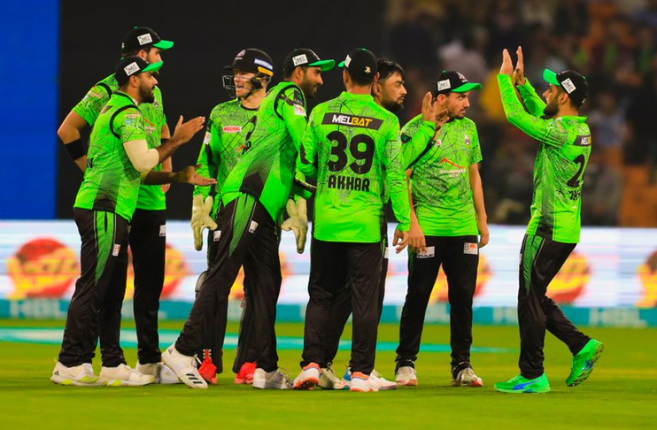

1 / 3

2 / 3

3 / 3
Lahore Qalandars (Urdu: لاہور قلندرز; Punjabi: لہور قلندرز; abbreviated as LQ) is a Pakistani professional cricket franchise which plays in the Pakistan Super League, representing the city of Lahore.[2] The home ground of the team is Gaddafi Stadium. The team is owned by Rana Brothers. The team is currently captained by Shaheen Afridi and coached by Aaqib Javed, a former Pakistani cricketer.[3]
Lahore Qalandars is owned by Rana brothers. It was the second-most expensive franchise, and one of the few teams sold to an international company.[4] The team finished at the bottom spot in the points table in each of the first four seasons of the PSL, before making its first appearance in the final in the 2020 edition. Then the team made another appearance in the 2022 PSL edition and won the season.
Fakhar Zaman is the leading run-scorer and Shaheen Afridi is the leading wicket-taker for the side.
In 2015, the Pakistan Cricket Board (PCB) announced that the inaugural season of the Pakistan Super League (PSL) would take place in February 2016 in the United Arab Emirates. On 3 December 2015, the PCB unveiled the owners of five city-based franchises. The Lahore franchise was sold to the Kausar Rana Resources Private Limited Company for US$25.1 million for a span of ten years, making it the second-most expensive team of PSL (after the Karachi Kings, which sold for US$26 million).
In 2016, under Players Development Program (PDP), the Lahore Qalandars franchise organised "Jazz Rising Stars" trials across eight Pakistani cities, to identify upcoming youth talent. Shortlisted players would travel to Australia and train with Sydney Thunder, while the top two performers would get the opportunity to play for the Qalandars. During the programme an ambidextrous fast bowler, Yasir Jan from Rawalpindi, was identified by former Pakistan fast bowler Aqib Javed.
League : Pakistan Super League
Captain : Shaheen Afridi
Coach : Aqib Javeed
Owner : Fawad Rana
City : Lahore, Punjab, Pakistan
Founded 2017; 6 years ago
Home ground : Guddafi Cricket Stadium
Capacity 27,000
PSL wins 1 (2022)
Official website: https://lahoreqalandars.com/
The Lahore Qalandars is a franchise cricket team that represents Lahore in the Pakistan Super League. They are one of the five teams that had a competition in the 2016 Pakistan Super League. The team was captained by Azhar Ali, and they stand on fifth position after winning just two matches from their eight matches in the PSL 2016, as a result they were eliminated in group stage.[1] Umar Akmal with 335 runs in 7 matches was leading run scorer of the tournament.
The Lahore Qalandars is a franchise cricket team that represents Lahore in the Pakistan Super League. They are one of the five teams that had a competition in the 2017 Pakistan Super League. The team was captained by Brendon McCullum, and they won three matches from their eight matches in the PSL 2017. They stand on fifth position and as a result they were eliminated in group stage.
The Lahore Qalandars cricket team is one of six teams that competed in the 2018 Pakistan Super League, representing Lahore, Punjab.
Team management retained Brendon McCullum as their captain.They finished sixth in the season after winning only three of their ten matches, and as a result, were eliminated in the group stage for the third consecutive year.[4]
In the 2021 season of PSL, Lahore Qalandars had an excellent kickstart with winning their first match of the season against Peshawar Zalmi with chasing them down and getting 143/6 under 19 overs. The next day on 22 February 2021, Lahore Qalandars won against Quetta Gladiators by 9 wickets and 10 balls left. They did an excellent job here getting 179/1 in 19 overs. Lahore went ahead and won four matches and 0 losses. Half of PSL 2021 was postponed due to COVID-19. The next match they played was on 10 June 2021 in Abu Dhabi between Lahore Qalandars and Islamabad United. This was a tricky match as Islamabad had completed 143 runs in 20 overs and having 9 players of their team out. Lahore Qalandars chased them and on the last ball Lahore Qalandars won by a single run and 5 wickets remaining. Having 144/5. This match introduced two new players of the Lahore Qalandars’ squad: James Faulkner as a fast bowler, and Tim David as Batsmen/ Wicket Keeper. Lahore Qalandars again won with 10 runs against Peshawar Zalmi. All seemed good for the Qalandars until the rematch against Islamabad where they dominated the Qalandars. The Qalandars lost by 28 runs and all out while chasing Islamabad with their 157 runs. Lahore lost their next matches against Quetta, Karachi Kings and then where Qalandars could have reached the finals against Multan Sultans. The Multan Sultans did 169/8 in twenty overs while the Lahore Qalandars did 89 and all out. This defeat was humiliating and led to the aftermath of Lahore Qalandars not qualifying for PSL 2021 play-offs. They ended the tournament with five victories and 5 losses.
The Lahore Qalandars (often abbreviated as LQ) is a franchise cricket team that represents Lahore, Punjab in the Pakistan Super League (PSL). The team is coach by Aaqib Javed, and captained by of Shaheen Afridi. In the final, they beat Multan Sultans by 42 runs to win their maiden PSL title.